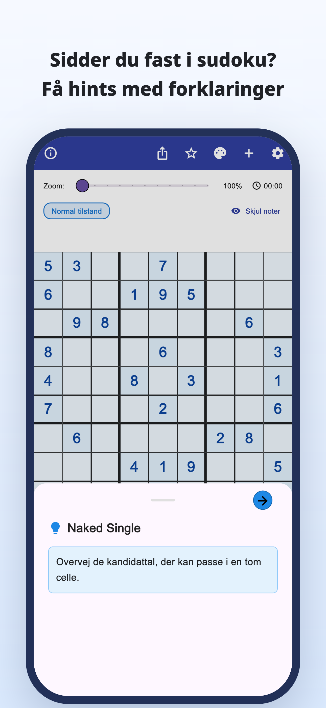
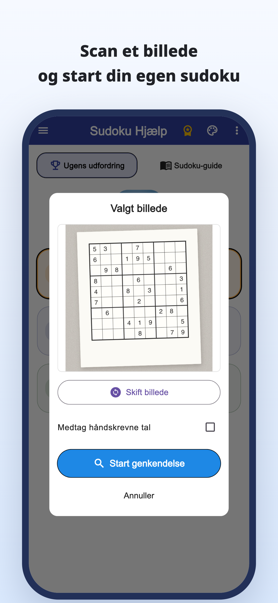
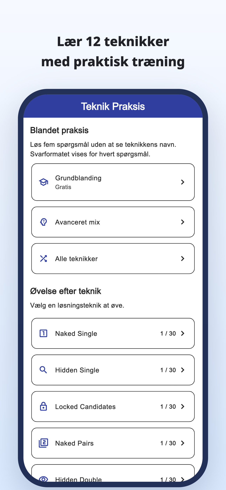
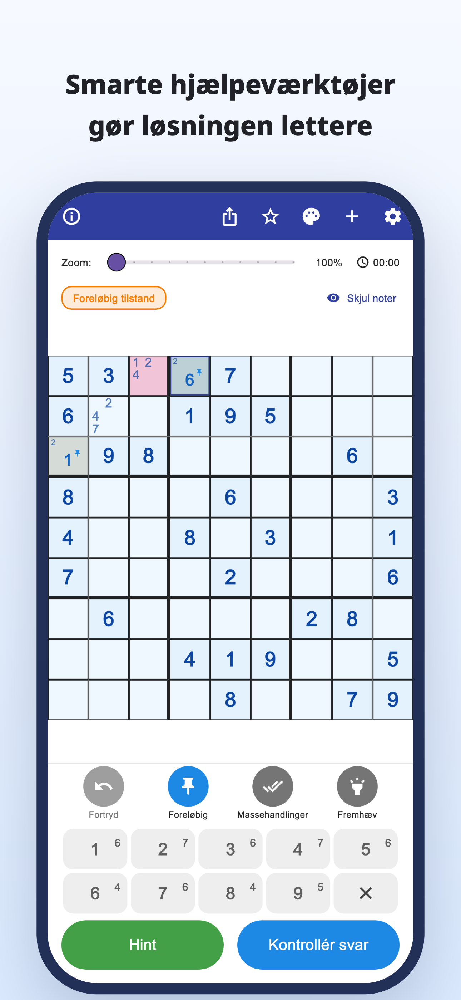
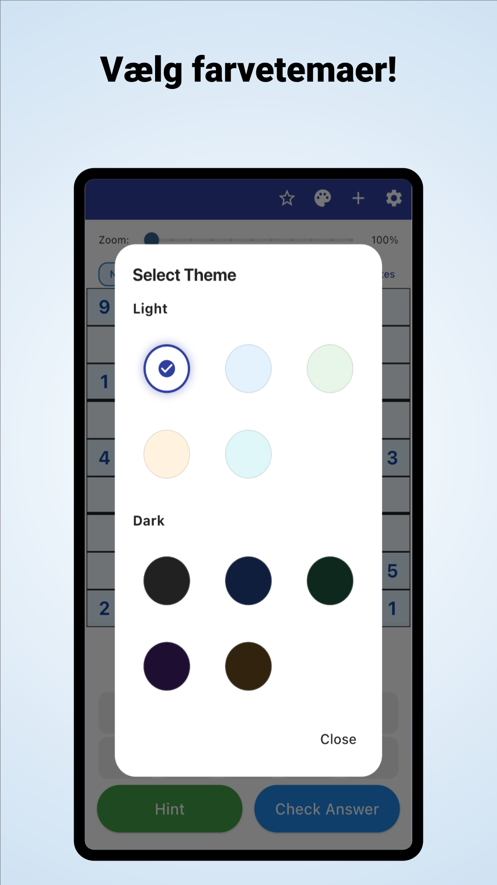

“Hvor skal jeg kigge nu?”
Du gennemgår feltet igen og igen,
men sidder fast det samme sted.
Scan med kameraet · Tips med forklaring
Scan opgaver fra aviser og blade.
Forstå, hvorfor et tal passer, og løs derefter videre selv.
iPhone og Android / Gratis download · Køb i appen





Kender du det, når du spiller?
Du gennemgår feltet igen og igen,
men sidder fast det samme sted.
Hvorfor skal netop det tal stå der?
Det er ikke nok bare at kopiere løsningen.
Du vil tage den papiropgave, du er i gang med,
og fortsætte i appen.
Fra et stop til et nyt spor
Læs en sudoku fra en avis eller et blad ind fra et foto, og slip for at taste alle tallene enkeltvis.
Læs fra et billedeLæs begrundelsen for et træk, og brug den til at finde næste skridt i stedet for blot at udfylde svaret.
Tips med forklaringSe forklaringer og øvelser for de enkelte teknikker, og øv dig i selv at genkende dem.
Øv teknikkerTil dig, der nyder selv at finde løsningen
Importer din sædvanlige opgave, og fortsæt, hvor du slap.
Forstå det svære punkt, og fortsæt selv.
Til begyndere og alle, der vil lære endnu en teknik.
Læs · Prøv · Øv
Begynd i din browser.
Læs en vejledning, eller spil en hel opgave.
Fra kandidatnoter til teknikforklaringer og øvelser.
Prøv en hel opgave med tips, når du har brug for dem.
Opdag reglerne og glæden ved at forbinde sporene.
Se på feltet med blå ramme, og åbn tippet.
Hint til næste træk
Tjek kandidaterne i et tomt felt.
Dette webeksempel lader dig prøve ét træk. Appens visning er anderledes.
Når du sidder fast i sudoku.
Download Sudoku Hjælp
Gratis download · Køb i appen
Appen kan downloades og prøves gratis. Tips, svarkontrol og billedscanning har forbrugsgrænser; nogle handlinger kræver, at du ser en videoannonce.
Premium er et måneds- eller årsabonnement. Det fjerner annoncer og giver ubegrænsede tips og svarkontrol. Billedscanning er stadig begrænset med Premium. Se priser og betingelser i appen.
Importer et foto af din sudoku. Kontroller de genkendte tal, og ret eventuelle fejl, før du begynder. Almindelige 9×9-sudokuer understøttes.
Du kan spille appens indbyggede opgaver og bruge forklaringer og øvelser til teknikker. Nogle opgaver og øvelser kræver Premium.
Ud over denne demo med ét træk kan du spille en hel opgave i browseren og se vejledninger og øvelser.
Sudoku-guide